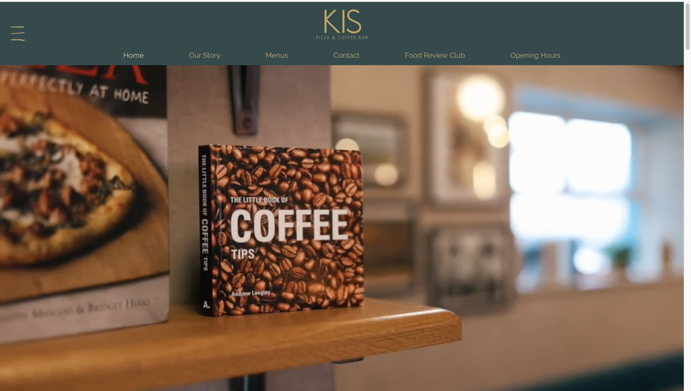
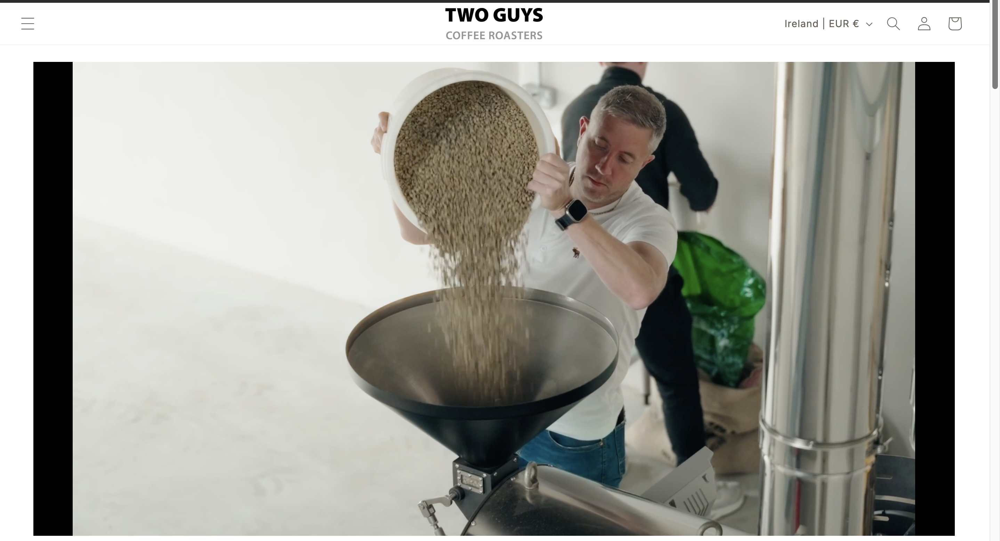
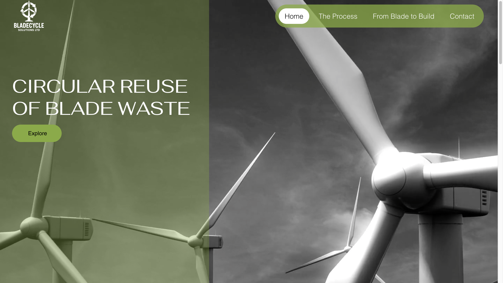
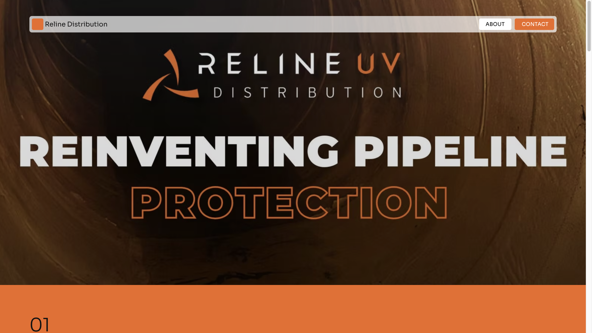

Website Design
Bespoke brochure-style websites for businesses that need a polished, modern online presence.
COCO DESIGN offers freelance web design, ecommerce and digital marketing support for small businesses that want a polished online presence, clearer messaging and a website that feels as professional as the work they do.
Freelance web design, ecommerce and digital marketing support tailored to your business.
I create bespoke websites for small businesses that want to look more established online. Alongside web design, I also offer freelance digital marketing support to help your brand stay visible, consistent and professionally presented across your wider online presence. The aim is simple: a website that looks premium, feels easy to use and supports real business growth.
Every project is tailored to your business, your goals and how you want your brand to come across online, from website design and ecommerce to freelance marketing support.
Bespoke brochure-style websites for businesses that need a polished, modern online presence.
Online shop design and setup focused on trust, clarity and a smooth customer experience.
Design direction and visual consistency so your website feels aligned with your brand.
A cleaner, stronger redesign if your current site no longer reflects the level of your business.
Ongoing marketing support for content, campaigns and online visibility, helping your business stay active and professionally presented after launch.
Continued support for website changes, improvements and keeping everything current.
The process is designed to feel calm, collaborative and easy to follow, even if this is your first proper website project.
We look at your business, your goals and the feel you want your brand to communicate.
I shape the visual direction, layout and messaging into something clear and considered.
Your website goes live with support in place if you need help with the next steps.
Clients often mention the creativity, support, professionalism and how easy the whole process feels.
Corinna did all my branding, set up my website and is always on hand if I need help. Professional, creative and so easy to deal with.
Lynne McBennettNothing was a problem, always on the other side of the phone if I had any queries. Professional advice, strong design and a real understanding of my needs.
Caroline MurphyCorinna designed our website earlier this year. Her work is excellent, efficient and affordable. First class service.
Noelle GrantA selection of recent projects focused on clean design, strong branding and websites that feel premium and perform.





If you want a site that feels polished, modern and aligned with your business, with freelance marketing support available too, get in touch.
Email Corinna